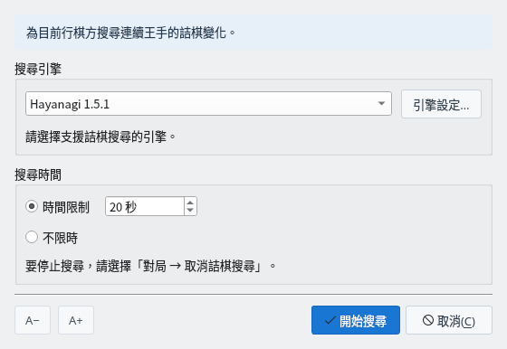
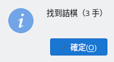
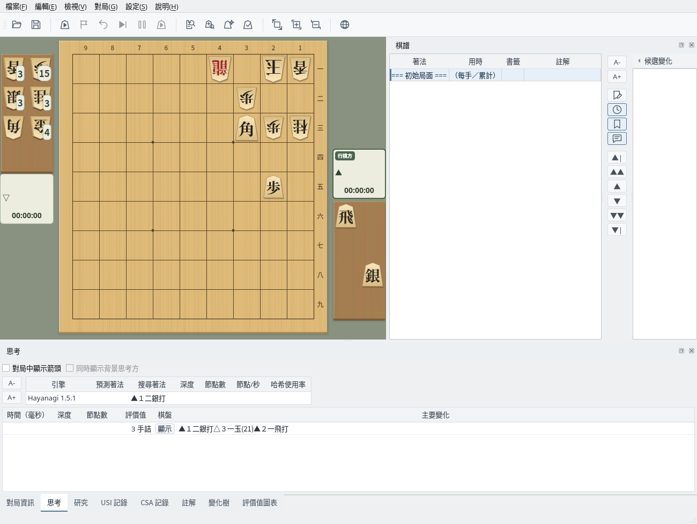
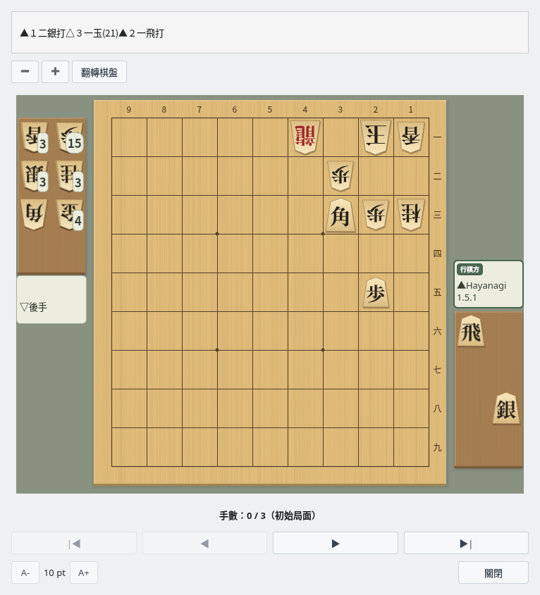
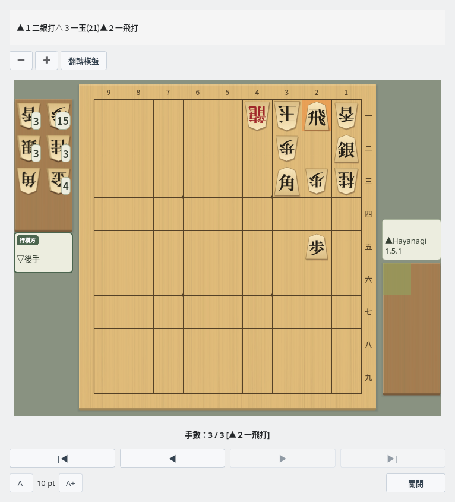

詰棋搜尋
用 USI 引擎調查目前局面是否有詰
截圖於 Linux 上以繁體中文介面擷取。
準備局面
在棋盤上顯示要調查的局面
顯示要調查的局面
詰棋搜尋從棋盤上顯示的局面出發，搜尋行棋方以連續王手將死對方玉的手順。可以直接調查開啟棋譜後選擇的局面或對局結束時的局面。在對局、研究、棋譜分析和局面編輯過程中無法使用。
如果要像詰棋那樣從頭建立局面，請選擇「編輯」→「開始編輯局面」擺放棋子，再按一下「結束編輯」確定（盤面編輯）。請讓進攻方成為行棋方。本指南使用「編輯」→「詰棋佈局」擺出的例題局面。
搜尋設定
在搜尋詰棋對話方塊中選擇引擎和搜尋時間
搜尋詰棋對話方塊
選擇「對局」→「搜尋詰棋…」開啟對話方塊，選擇引擎和搜尋時間後按一下「開始搜尋」。所選的引擎和搜尋時間下次也會沿用。

搜尋詰棋對話方塊：選擇引擎和搜尋時間後按一下「開始搜尋」
| 項目 | 說明 |
|---|---|
| 搜尋引擎 | 從「設定」→「引擎設定…」中註冊的 USI 引擎中選擇。按一下「引擎設定…」按鈕可以變更所選引擎的選項。 |
| 時間限制 | 以秒為單位指定搜尋時間的上限（預設 20 秒）。 |
| 不限時 | 一直搜尋，直到判明是否有詰。 |
| A− / A+ | 變更對話方塊的文字大小。 |
詰棋搜尋需要支援 USI 詰棋搜尋（go mate）的引擎。可以註冊 ShogiBoardQ 的 Hayanagi（各作業系統的發行套件皆附帶，註冊方法請參閱 Hayanagi 指南），或 komori-n 開發並公開的詰棋引擎 KomoringHeights。引擎的註冊方法請參閱引擎註冊指南。
搜尋過程中可以選擇「對局」→「取消詰棋搜尋」停止搜尋。停止後不會顯示結果。
搜尋結果
搜尋結束後會顯示結果，詰殺手順保留在思考分頁中
結果訊息
搜尋結束後，會以訊息顯示結果。

結果訊息：找到詰棋（3 手）
| 訊息 | 含義 |
|---|---|
| 找到詰棋（N 手） | 找到了詰殺。N 是包括守方應著在內的詰殺手數。 |
| 無詰 | 已判明連續王手無法將死。 |
| 未能在限定時間內判定詰棋 | 在指定的時間內未能判明是否有詰。請延長時間，或選擇「不限時」重新搜尋。 |
| （引擎）尚未實現 | 所選引擎不支援詰棋搜尋（go mate）。 |
思考分頁中的詰殺手順
找到詰殺後，「思考」分頁中會增加一列詰殺手順。「評價值」欄顯示「3 手詰」這樣的詰殺手數，「主要變化」欄顯示詰殺手順。

思考分頁：評價值為「3 手詰」，主要變化為詰殺手順
主要變化顯示
在棋盤上逐手重播詰殺手順
開啟主要變化顯示視窗
在思考分頁的詰殺手順列中，按一下「棋盤」欄的「顯示」，即可開啟主要變化顯示視窗。上方顯示詰殺手順，下方顯示搜尋的局面。

主要變化顯示：初始局面（手數 0 / 3）
重播詰殺手順
按一下「▶」逐手前進，按一下「▶|」前進到詰殺的局面。上一步著法會在棋盤上強調顯示，手數欄顯示目前是第幾手。

主要變化顯示：▲２一飛打將死（手數 3 / 3）
| 按鈕 | 操作 |
|---|---|
| |◀ ／ ▶| | 回到初始局面／前進到最後的局面（詰殺局面） |
| ◀ ／ ▶ | 後退一手／前進一手 |
| − ／ ＋ | 縮小／放大棋盤（在棋盤上按住 Ctrl 捲動滑鼠滾輪也可以） |
| 翻轉棋盤 | 將棋盤旋轉 180 度 |
| A- ／ A+ | 變更視窗的文字大小 |